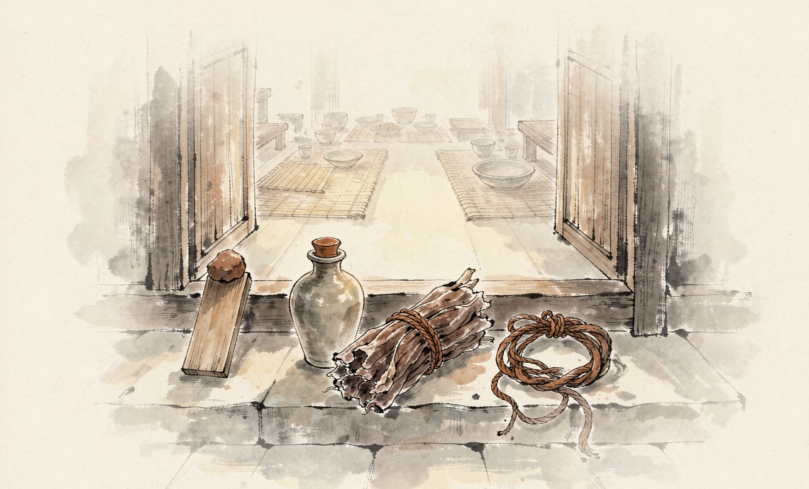
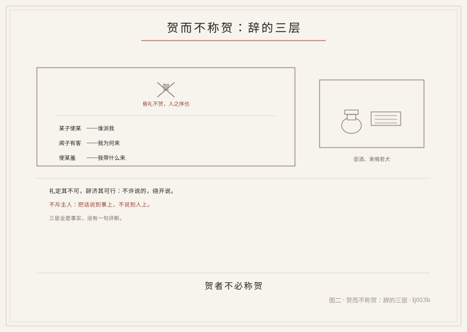

曲礼上 · 一·五十五 · 第 53 课
亲友娶妻，自己有事去不了，派人送礼，辞是这样说的：「某子使某，闻子有客，使某羞。」不说贺，只说听说你家里有客，让我送点酒食来。
说什么事：贺取妻者，曰：「某子使某，闻子有客，使某羞。」
落在哪一层：教。上节讲交友之慎，此节讲庆吊之辞。
为何编在此位：一·五十四讲「嫌」，此节讲「辞」；嫌既难避，辞可以绕。
【经】賀取妻者，曰：「某子使某，聞子有客，使某羞。」
贺取妻者 疏：「谓亲朋友有昏，己有事碍不得自往，而遣人往也。」
某子使某 疏：「『某子』者，贺者名。『使某』者，使自称名也。言彼使我来也。」
闻子有客 疏：「『闻子』，呼娶妻者为子也。昏礼既不称贺，故云『闻子有客』也。客者，乡党僚友之属也。」
使某羞 郑注：「羞，进也，言进于客。」疏：「子既召宾客，或须饮食，故使我将此酒食以与子进宾客。」
不斥主人，昏礼不贺 郑注。疏引《郊特牲》：「昏礼不贺，人之序也。」
其礼 注：「盖壶酒、束脩若犬也。」疏：「束脩，十脡脯也。若无脯，则壶酒及一犬。」
贺人娶妻，辞曰：「某子派我来，听说你家里有客，让我送些酒食来。」
一节全在「辞」上：明明为贺而来，辞里没有一个「贺」字。昏礼不贺，故贺者绕开「贺」，落在「有客」与「送酒食」；礼不许说的，辞设法不说。
第一层 昏礼不贺 注末四字「昏礼不贺」，是全节的根。疏引《郊特牲》「昏礼不贺，人之序也」——序，是代际接续之序。娶妻不是添喜，是接代；接代这件事，不宜以贺为辞。
第二层 不斥主人 注「不斥主人」。不说「贺你娶妻」，只说「闻子有客」。把主语从「你的婚事」移到「你的客人」，一句话就把不宜说的让开了。
第三层 辞的三层结构 「某子使某」——谁派我；「闻子有客」——我为什么来；「使某羞」——我带什么来。三层全是事实，没有一句评断。
第四层 礼与辞的分工 礼定其不可，辞济其可行。此节最见这一点：礼说昏礼不贺，辞就让「贺」这件事以「送酒食」的样子成立。
与今日何干 今日婚礼大贺，无此戒。但「不斥主人」一条仍可用：把话说到事上，不说到人上，许多难说的话就有了出口。
| 左 | 右 |
|---|---|
| 贺取妻者 | 亲友有昏，己不得自往而遣人往 |
| 某子使某 | 某子，贺者名；某，使者名 |
| 闻子有客 | 不斥主人；称娶妻者为子 |
| 使某羞 | 羞，进也；进酒食于客 |
| 昏礼不贺 | 人之序也（《郊特牲》） |
| 其礼 | 壶酒、束脩若犬 |

